1. 安裝 CAMPro
2. 啟動 CAMPro
3. 如何更新 CAMPro
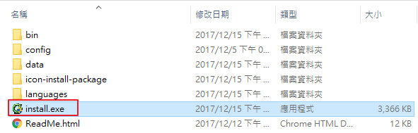
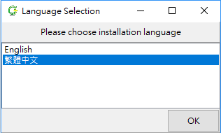
目的資料夾：可以選擇要安裝之路徑，範例以 "C:\CAMPro" 為例。
安裝類型：點選 "初次安裝"。
點選 "下一步"。
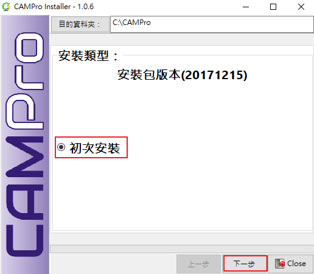
設定 Server Port，欄位請輸入 8090、8898、8080、或 8888，範例以 8888 為例。
以上設定完成後點選 "下一步"。
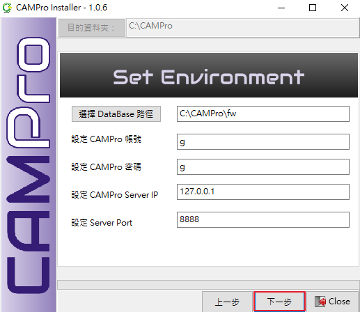
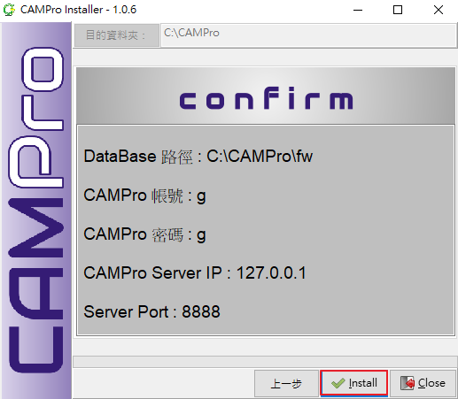
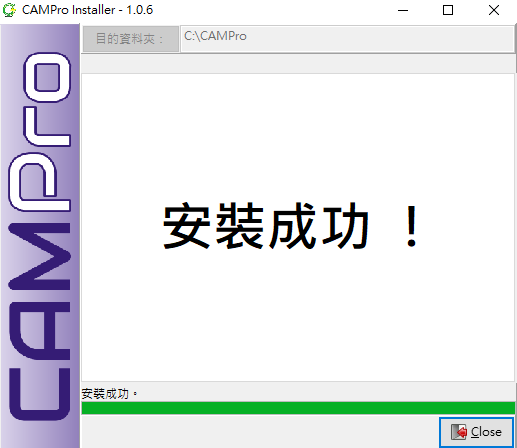
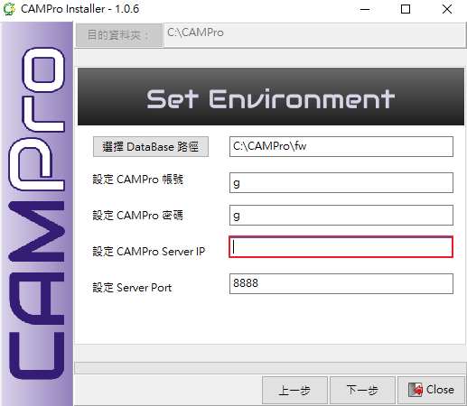
將 USB Key 插入電腦。
進入路徑 C:\campro\1.1。
先開啟 "ezServer" 並確認要連入的主機 ezServer 是否也已經啟動，然後再點選 "camPro.exe" 即可。
輸入 Login Name: g。
輸入 Password: g。
說明皆以預設值設定 g 為例。
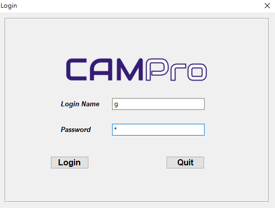
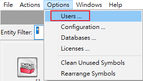
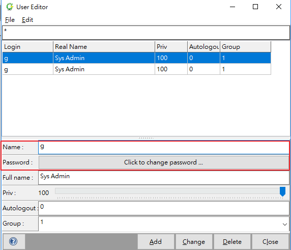
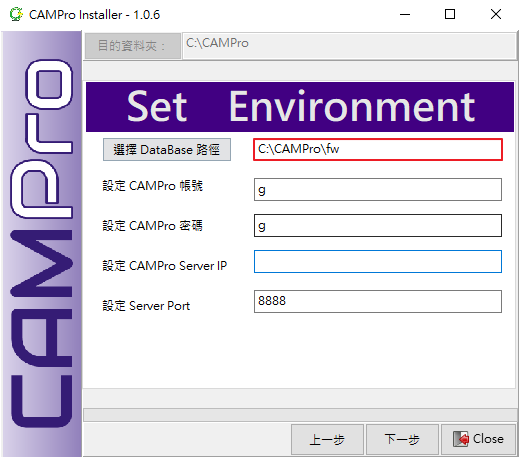
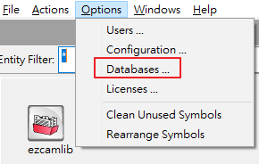
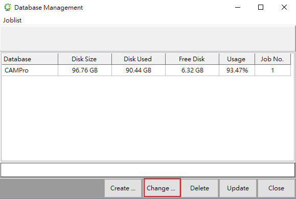
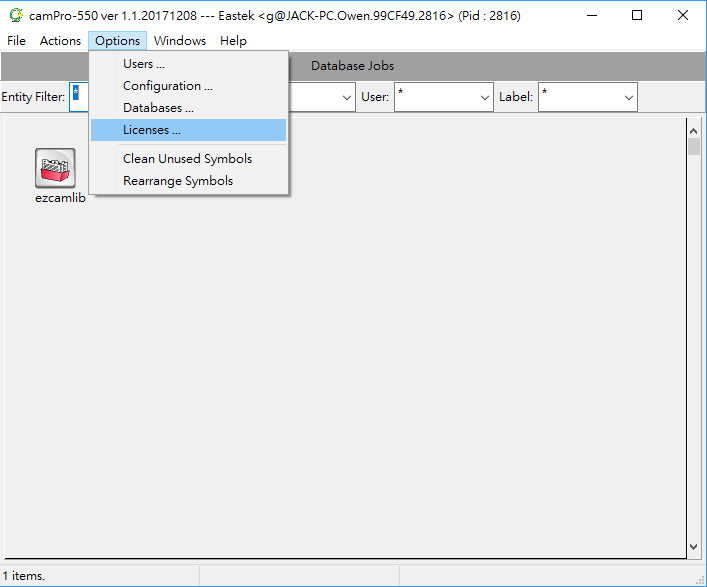
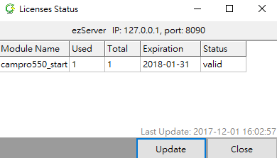
目的資料夾：要安裝之路徑，範例以 "C:\CAMPro" 為例。
安裝類型：點選 "版本更新"。
點選 "更新"。
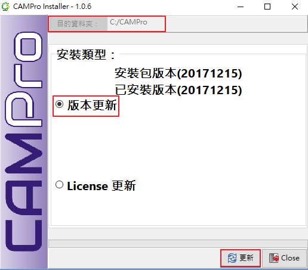
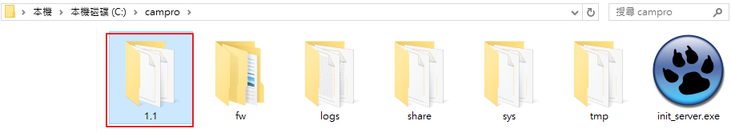
目的資料夾：要安裝之路徑，範例以 "C:\campro" 為例。
安裝類型：點選 "License 更新"。
點選 "更新"。
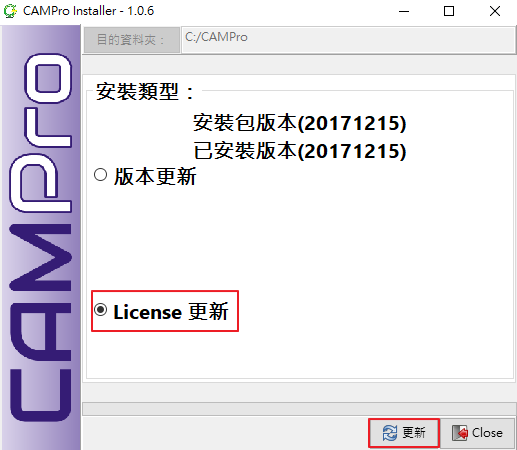
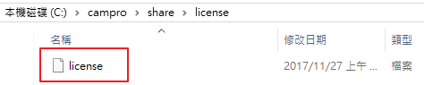